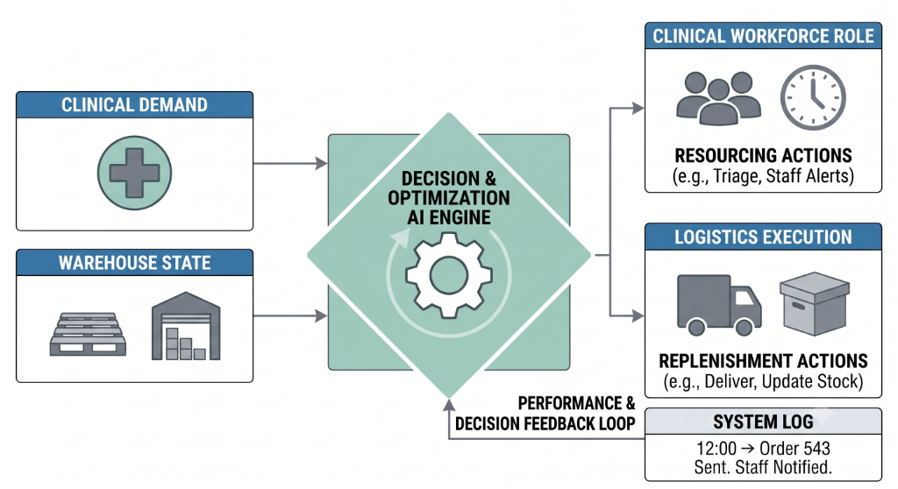

In complex operational environments, humans are constantly bombarded with dynamic, messy data. The real challenge isn't just generating an accurate forecast—it's translating that forecast into safe, actionable decisions under pressure.
AI in Healthcare
In hospitals, decisions carry life-or-death consequences. Whether it's prioritizing patients in a crowded ER, adjusting nurse staffing to prevent burnout and ensure safety, or managing critical medical supplies, AI serves as an intelligent "control tower." By evaluating clinical acuity, wait times, and supply chain signals, AI agents can recommend specific actions, escalate risks, and generate auditable documentation—always keeping the human clinician in the final loop.
AI in Industry & Warehousing
For industrial and warehouse logistics, the focus shifts to efficiency, cost-control, and labor optimization. Machine learning predicts volume spikes and workflow bottlenecks. Decision-support agents then evaluate these forecasts against business logic to recommend voluntary time off (VTO) or extra time (VET), optimizing labor spend while maintaining throughput.
The common thread: The technology is the same. By synthesizing data, applying deterministic safety guardrails, and using agents to coordinate logic, we build transparent systems that empower human operators rather than replacing them.
The Core AI Engine

By unifying data streams from both clinical demand and warehouse states, the centralized AI engine acts as the operational brain. It evaluates real-time pressures against deterministic rules to output highly optimized resourcing and replenishment actions.
A continuous feedback loop ensures that every decision made by the AI or overridden by human operators is logged, tracked, and used to refine future performance.